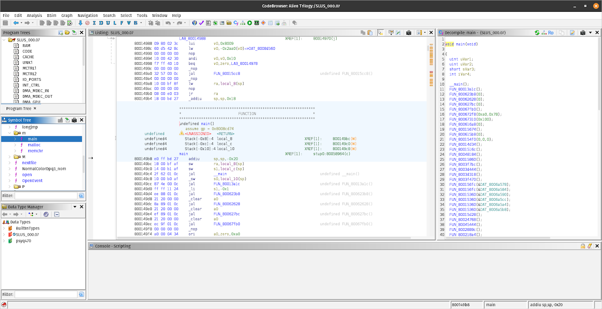
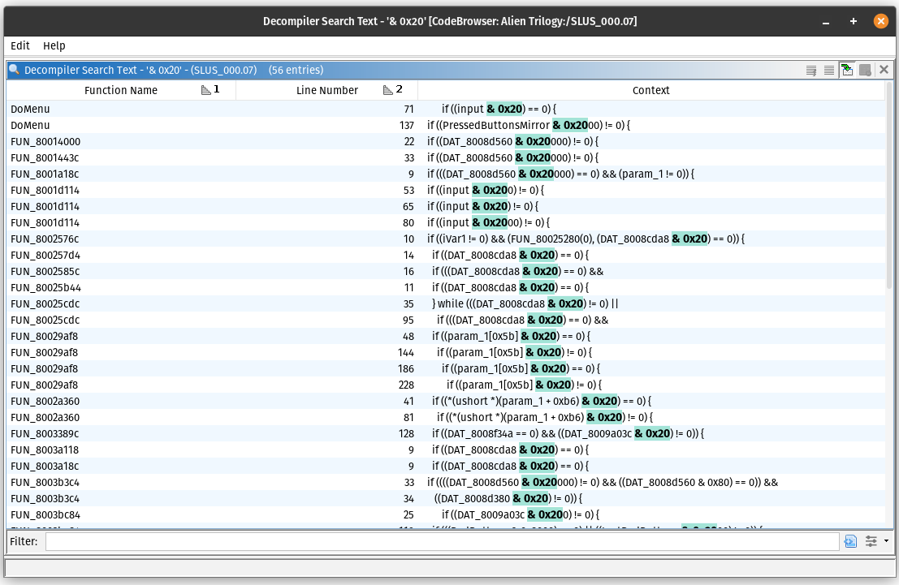
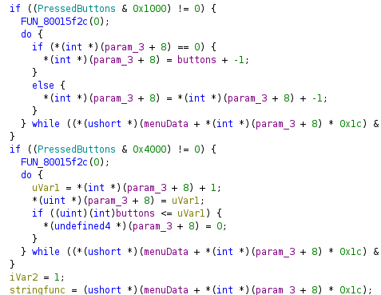
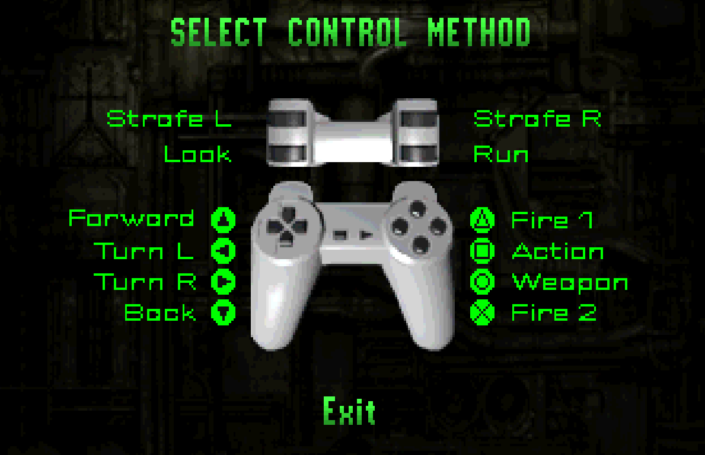
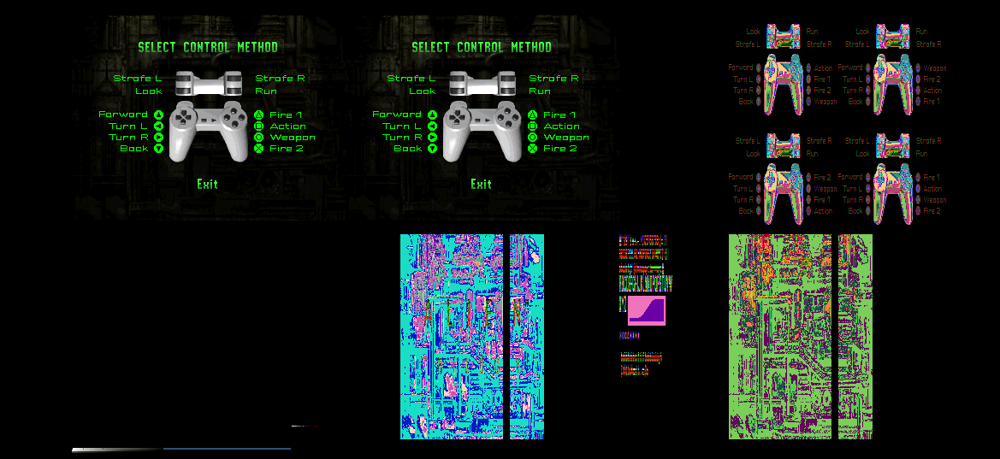
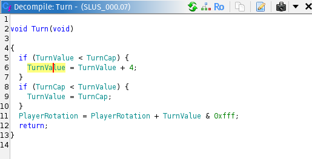
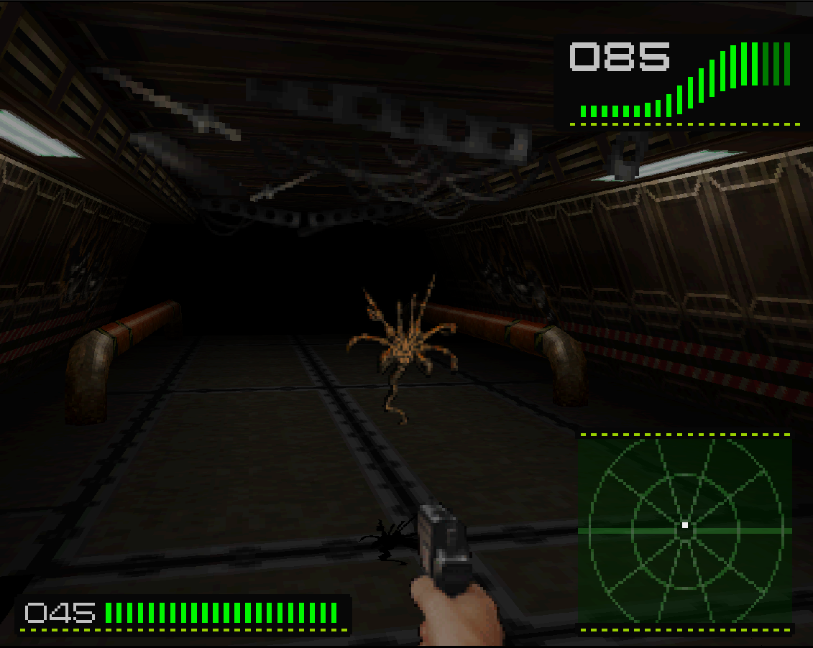

Welcome to a little blog about trying to add mouse controls to the PS1 FPS, Alien Trilogy. I started this when I found out the DOS port of the game doesn't have mouselook like I'd thought, and seeing as the PS1 port is the best version of the game, I thought I'd give adding mouse support a go.
My plan is to try and find the function for turning the player, so that I can increase the turning speed. This is because when using an emulator to bind turning to the mouse, the sensitivity is far too low. To do this, I need to disassemble the executable using Ghidra, which is a SRE (Software Reverse Engineering) tool made by the NSA (National Security Agency), primarily for reverse engineering malware. Thankfully, lab313ru on GitHub has made a plugin which can analyze PS1 machine code and detect SDK functions https://github.com/lab313ru/ghidra_psx_ldr
I then used dumpsxiso, a tool for extracting the files from a PS1 disc image, and loaded the main executable, SLUS_000.07, into Ghidra.

So where do we go from here? Well thankfully, I can look through the symbol tree to see if it found any SDK functions for getting input, and though I couldn't find the actual functions, I found some of the functions these use in the background, Pad_init2 and Pad_dr. Pad_init2 should tell the bios to poll the controller driver at 60hz, and Pad_dr, which we're more interested in, grabs the controller input into a buffer the game can get.
After tracing how Pad_dr was used, I found 3 variables which track controller input for the game, which are all pretty standard (one for current state, one for prevoius frame's state and one for the buttons pressed that frame). I now need to find where these were being used...
The controller input buffer is two bytes, with each button being one bit of this, so to search for what we want, in this case left and right on the D-Pad I can search for any instances of & 0x20 or & 0x80 respectively. However, ghidra likes to make most values show as hexadecimal, so searching for these came back with a lot of results. I tried combing through these but wasn't really able to find anything.

Half way through looking however, I remembered the game actually lets you choose a control scheme, so finding them by constants won't be the way to go. I'll need to find where it sets the keybinds and hopefully go from there. To do that though, I thought the easiest way would be to find the functions handling the control scheme menu. Easy is not a word I would now use to describe finding the menus.
From the little decompiling I have done, menus have generally been the least of my worries, as they are, by and large, simple and not very obscured. However, this game seems to use some sort of system where it uses structs with callbacks to determine the logic for each menu, which sounds smart and cool on the dev side, but when trying to figure it out in decompiled code with compiler optimizations, it's a whole different story. Ghidra can't really find structs that aren't already in the SDK (and even then it struggles), so you'll usually get lots of random pointer offsets with weird incomprehensible casting, such as these:

It also can't find most callbacks, as I believe it finds new functions to decompile by starting in main and finding all the jumps and branches it can, so if the callback is only referenced as a variable it'll never be discovered. This means we'll have to go into an emulator with a debugger and trace where it jumps to. Thankfully DuckStation, the recommended emulator for the PS1 at the moment, has a nice suite of tools for this. I can put the address where it calls these callbacks as a breakpoint in the CPU debugger and step into what's happening.
Using this I found 3 callbacks it uses:
One which grabs and renders the current menu's title
One which seemingly does the actual menu logic, but it's hard to tell as it is mostly math between unknown variables
One which draws the exit button
These were interesting to find, but weren't going to get me anywhere unless I spent a lot of time figuring out the logic. As a way to try to pinpoint which part was specifically setting the bindings, I tried to search for the different strings related to them (Run, Fire 1 etc.)

I couldn't find any references to these strings in the binary, which puzzled me for a while, until I looked at the VRAM and lo and behold, each control method is an individual texture :|

However, from spending time on this menu I realised the bindings on the D-Pad are constant, so the only way forward would be to scour through the references to the controller input and check for any AND's with global variables in order to discover the actual control bindings which will, fingers crossed, point me in the direction of code handling the player movement.
Thankfully, I didn't have to search long to find a function with a lot of these and trace where these global variables get written lead me to a nicely laid out function for setting the control method! However, on finding this I noticed the values set weren't really matching the buttons I'd seen on the menu, until I realized something that'd been causing a lot of my confusion over code using input I'd seen before. For whatever reason, they change the endianess of the input buffer? No idea why, but with this new knowledge I was able to find some promising looking functions near checking for strafe inputs.

The turning function is pretty simple, TurnValue will accumlate over time when a direction is pressed, which adds some nice turn smoothing. I will eventually hit the turning speed limit, TurnCap, and then rotate at that interval every frame (30 fps). There is also a very similar function for turning the other direction, the only difference being a minus in Line 11
This is also thankfully very easy to modify, as all of these values are hard-coded at some point and we can just patch the instruction to change the value.
With all this we can now mess around with values and see what feels good. Setting the TurnCap to around 0xA0 and the 4 in either function to 0x40 seems to work nicely, as this basically ignores the smoothing and gives good sensitivity. However, there's some pretty glaring issues stopping this from being actually playable.
Because binding the mouse in an emulator will just press the D-Pad, all the nuance of mouse movement gets ignored, which means small adjustments feel way too sensitive and big ones you'd expect to let the player do a 180 aren't sensitive enough. The solution is to patch in my own mouse support (the PS1 does have a mouse peripheral, and quite a few FPS's actually support it), but for now, here are the addresses for you to mess around with if you wish :)
0x80039AE0 - Right Turn Speed - Recommended 0x40
0x80039A68 - Left Turn Speed - Recommended 0x40
0x8003be94 - TurnCap strafe - Recommended 0xA0 (Quick Note: you actually tun faster in the normal controls when strafing for some reason...)
0x8003bed8 - TurnCap straight - Recommended 0xA0
